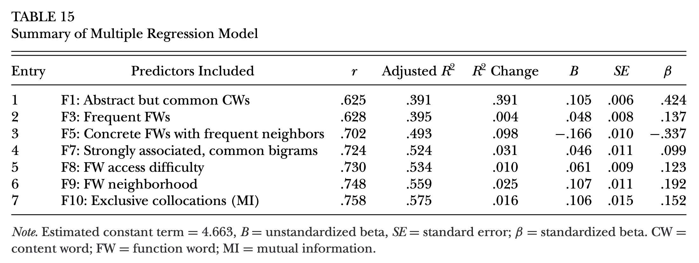

Session 4: Analyzing Vocabulary
Housekeeping
- Corpus Lab 1 Due 8/5 (Tue) 10:30
Session overview
Introduction to Learner Corpus Research
Learner Corpus Research
A strand of research investigating:
- What language varieties are present among non-native speaker
- How their native language varieties influence their production
- What constitutes second-language proficiency
- How learners develop their language skills
In this course, we will mostly focus on question 3 and 4.
Goals of SLA Research
To make a somewhat bold statement, many SLA researchers are interested in describing:
- patterns and rates of L2 development (Ortega & Iberri-Shea, 2005)
- features that distinguishes more or less successful communication (Isaacs & Trofimovich, 2012; Revesz et al., 2014)
- Isaacs, T., & Trofimovich, P. (2012). DECONSTRUCTING COMPREHENSIBILITY: Identifying the Linguistic Influences on Listeners’ L2 Comprehensibility Ratings. Studies in Second Language Acquisition, 34(3), 475–505. https://doi.org/10.1017/s0272263112000150
- Ortega, L., & Iberri-Shea, G. (2005). LONGITUDINAL RESEARCH IN SECOND LANGUAGE ACQUISITION: RECENT TRENDS AND FUTURE DIRECTIONS. Annual Review of Applied Linguistics, 25, 26–45. https://doi.org/10.1017/S0267190505000024
- Revesz, A., Ekiert, M., & Torgersen, E. N. (2014). The Effects of Complexity, Accuracy, and Fluency on Communicative Adequacy in Oral Task Performance. Applied Linguistics, amu069. https://doi.org/10.1093/applin/amu069
The interface between SLA and corpus methods
Goal: Revealing development paces and patterns
We can use corpus linguistic methods to help us identify the features of language use to understand constructs of our interest.
→ More and more SLA researchers rely on corpus methods.
Benefits and Caveats
Benefits:
- We can calculate measures more easily.
Caveats:
- Researchers tend to use “simple measures to calculate”
üéØ Learning Objectives
By the end of this session, students will be able to:
- Discuss measurement issues in SLA
- Explain the purposes of linguistic measures
- List commonly used lexical measures in second language acquisition research
- Explain sub-constructs of lexical richness measures
- Lexical Diversity
- Lexical Sophistication
Measurement in SLA
Measurement - What is it?
- We talked about: scientific research cycle.

research cycle
- As expansion, we add one more term, measurement.
The measurement Process
The Measurement process
Construct definition and measurement
Conceptual work
Construct definition: delineates the theoretical interpretation that can be attached to the observation data (or a measure).
- Do you want to know about motivation or engagement?
Behavior identification: What kind of behavior do you need to observe?
Task specification: In what condition do you need to set up to observe the intended behavior?
Construct definition and measurement
Procedual work
Behavior elicitation: Target behavior is elicited, observed and recorded.
Observation scoring: Classifying or coding observed behavior into categories or values to link them to theoretically meaningful interpretation.
Data analysis: Scores are summarized and patterns are described to provide probablistic evaluation of the data.
Compare and contrast the two framework
- What are the relationships between the two?
- What do you think are the key points extracted from the two approaches?

Interrim Summary
- In this course, we emphasize the measurement process of the corpus-based linguistic measures.
- Critical evaluation of measures/indices
- Justified choice of measures/indices
- cautionary interpretation of measures/indices
Vocabulary Measurement
Assessing Lexical Richness in Learner Language
Overview
- Vocabulary knowledge is usually conceptualized as:
- Breadth,
- Depth, and
- Fluency
Compare the two texts.
Which one do you think reflect “better” vocabulary use?
Is important for college students to have a part-time job? I think that has much opinion to answer it. The part-time job is a job that can do in partial time. So the college student can do part-time job when they has spare time (if they want). There are many reasons why the college student do part-time job (if they do).
I find it hard to make a generalisation on whether it’s important or not for college students to have a part-time job, because this seems like something very individual and highly dependent on the individual student and their circumstances. Jobs serve a few main functions: to earn money, to gain experience, to get a head-start in a career, and to have something to do.
Lexical Richness
- Vocabulary use is usually conceptualized as:
- lexical richness (Read, 2000)
- lexical diversity (LD) and
- lexical sophistication (LS)
- lexical richness (Read, 2000)
Lexical diversity
Definition of lexical diversity (LD)
- LD: “the range of different words used in a text” (Durrant, 2023, p. 37)
- The more different words a learner use, the more lexically diverse.
Assumption
- The more vocabulary they know, the more diverse their vocabulary use is.
Complicating factor
- Lexical diversity can be affected not only by proficiency or vocabulary breadth but also:
- text genre they write in
- local cohesion
Lexical sophistication
Definition of lexical sophistication (LS)
- LS is a bit more difficult to define:
- It attempts to describe qualities of items being used
- Sometimes defined as “relative difficulty” (Kyle, 2020)
- “semantic specificity” or “pragmatic appropriateness”
Operationalizing Lexical Richness
Text-internal vs external measures
Skehan (2009) distinguished:
| Type | Description | Example |
|---|---|---|
| Text-internal | The (learner-produced) text is sufficient for calculation | Lexical Diversity, Lexical Density |
| Text-external | Reference corpus is needed to derive score | Lexical Sophistication, Phraseological Sophistication |
Skehan, P. (2009). Modelling Second Language Performance: Integrating Complexity, Accuracy, Fluency, and Lexis. Applied Linguistics, 30(4), 510–532. https://doi.org/10.1093/applin/amp047
Operationalizing lexical diversity
Operationalizing LD
- Typically LD is operationalized by observing the proportion of unique words in a text (Jarvis, 2013, p. 88)
Jarvis, S. (2013). Capturing the Diversity in Lexical Diversity. Language Learning, 63(s1), 87–106. https://doi.org/10.1111/j.1467-9922.2012.00739.x
Lexical diversity indices
Old LD measures include:
\(TTR = {nType \over nToken}\)
\(RootTTR (Guiraud Index) = {nType \over \sqrt{nToken}}\)
\(LogTTR = {\log(nType) \over \log(nToken)}\)
\(Maas = {\log(nTokens) - \log(nTypes) \over \log(nToken)^2}\)
→ Never use
TTR,RootTTR,LogTTR
A major problem with old lexical diversity measures
- The old LD indices is inherently related to text-lengths (Zenker & Kyle, 2020; Kyle et al., 2024).
Relationship between text-lengths and LD measures
Kyle, K., Sung, H., Eguchi, M., & Zenker, F. (2024). Evaluating evidence for the reliability and validity of lexical diversity indices in L2 oral task responses. Studies in Second Language Acquisition, 46(1), 278–299. https://doi.org/10.1017/S0272263123000402
Zenker & Kyle
Recent LD indices that overcame text-lengths issue
- Mean-Average Type Token Ratio (MATTR)
- The measure of textual lexical diversity (MTLD)
MATTR
- Calculating TTRs multiple times with sliding windows
Process:
- Calculate TTR for words 1-50
- Calculate TTR for words 2-51
- Calculate TTR for words 3-52
- Continue to end of text
- Average all TTR values
MATTR example
Text with 100 words:
Window 1: [1-50] → TTR = 0.68
Window 2: [2-51] → TTR = 0.69
Window 3: [3-52] → TTR = 0.67
...
Window 51: [51-100] → TTR = 0.70Then by taking average of all windows = 0.685
MTLD
Measures how many words it takes for lexical diversity to “stabilize”
Process:
- Reads through text sequentially
- Calculates TTR as it goes
- When TTR drops to threshold (traditionally 0.72), marks a “factor”
- Starts counting again for next factor
Score: Average factor length (higher = more diverse)
MTLD Example
In the following MTLD was calculated as:
- (32 + 45) / 2 = 38
Text: "The cat sat on the mat... The cat was happy. ... The bird flew by."
|--- Factor 1: 32 words ----------||---- Factor 2: 44 words-----|
(TTR drops to 0.72) (TTR drops to 0.72)- MTLD does this process both forward and backward.
Any questions?
Operationalizing Lexical Sophistication
Operationalizing LS
- Historically,
word frequencyinformation in reference corpora has been used to operationalize LS
Example 1: The big company bought the small business.
Example 2: The major corporation acquired the diminutive enterprise.
Lexical Frequency Profile (LFP)
In LFP, words in learner text are categorized into different frequency bands in the reference corpus.
| Band | Proportion |
|---|---|
| First 1000 | 75% |
| Second 2000 | 10% |
| Academic Word List | 10% |
| Others | 5% |
- This gives you four scores: 75%, 10%, 10%, 5%.
- A simpler version
Beyond 2000(Laufer, 1995) is used more often- \(\text{Beyond 2000} = \frac{\text{Number of beyond-2000 word types}}{\text{Total number of word types}}\)
- Laufer, B. (1995). Beyond 2000: A measure of productive lexicon in a second language. In L. Eubank, L. Selinker, & M. Sharwood Smith (Eds.), The Current State of Interlanguage: Studies in honor of William E. Rutherford (p. 265). John Benjamins Publishing Company. https://doi.org/10.1075/z.73.21lau
- Laufer, B., & Nation, P. (1995). Vocabulary Size and Use: Lexical Richness in L2 Written Production.
- Lu, X. (2012). The Relationship of Lexical Richness to the Quality of ESL Learners’ Oral Narratives. The Modern Language Journal, 96(2), 190–208. https://doi.org/10.1111/j.1540-4781.2011.01232_1.x
Other frequency-based measures
- P_lex (Meara & Bell, 2000)
- S (Kojima & Yamashita, 2014)
- Count-based measures (Crossley et al., 2014)
- Crossley, S. A., Cobb, T., & McNamara, D. S. (2013). Comparing count-based and band-based indices of word frequency: Implications for active vocabulary research and pedagogical applications. System, 41(4), 965–981. https://doi.org/10.1016/j.system.2013.08.002
- Kojima, M., & Yamashita, J. (2014). Reliability of lexical richness measures based on word lists in short second language productions. System, 42, 23–33. https://doi.org/10.1016/j.system.2013.10.019
- Meara, P., & Bell, H. (2001). P-Lex: A Simple and Effective Way of Describing the lexical Characteristics of Short L2 Tests. Prospect, 16(3), 5–19.
Towards multidimensional lexical sophistication
More recent research recognizes multidimensionality in conceptualize and operationalize LS.
Kyle & Crossley (2015) proposed the Tool of Automated Analysis of Lexical Sophistication (TAALES).
Kim, Crossley & Kyle (2018): proposed multidimensional LS for writing.
Eguchi & Kyle (2020): followed up the concept in L2 speaking.
Categories of lexical sophistication
Durrant (2023) highlighted several categories:
- Word lengths
- Word frequency
- Register-based measures
- Contextual distinctiveness
- Semantic Measures
- Psycholinguistic measures
Register-based measures
LS should also tap into the extent to which the text uses items that are characteristics of the target register
- Proportion of words in Academic Word List (Coxhead, 2000)
- low score: I saw that …
- high score: I observed that …
Contextual distinctiveness
A word used in a narrower context (specific situation) should be considered more sophisticated.
- Semantic Diversity (SemD; Hoffman et al., 2013)
- Hoffman, P., Lambon Ralph, M. A., & Rogers, T. T. (2013). Semantic diversity: A measure of semantic ambiguity based on variability in the contextual usage of words. Behavior Research Methods, 45(3), 718–730. https://doi.org/10.3758/s13428-012-0278-x
Semantic Measures - Concrete vs Abstract referents
A word that involke more abstract concepts should be considered more sophisticated.
| Concrete | Abstract | |
|---|---|---|
| Frequent | dog, car | love, idea |
| Infrequent | charger, helmet | empathy, hypothesis |
Semantic Measures - Hypernymy
- A word that have a larger set of superordinate terms should be considered more sophisticated.

Questions?
Representative Study
Eguchi & Kyle (2020)
Goal: Investigate multidimensional nature of lexical sophistication in L2 oral proficiency interviews (OPIs)
Corpus: NICT JLE corpus (1,281 Japanese L2 English OPIs)
Method: Exploratory Factor Analysis (EFA) + regression analysis
LS Measures
- Frequency (e.g., COCA-Spoken, BNC-Spoken)
- Range (e.g., COCA)
- Psycholinguistic norms (concreteness, imageability)
- Age of acquisition/exposure
- Semantic networks (hypernymy, polysemy)
- Word recognition (lexical decision times)
- Contextual distinctiveness (semantic diversity)
- Word neighborhood (orthographic/phonological)
- Academic language (AWL membership)
- N-gram frequency
- N-gram range
- N-gram association (MI, MI2, T-score)
Sample dimensions
Factor 1
Sample dimensions
Factor 4
Final regression models
final regression to predict OPI
Summary
The Measurement Process in SLA
The measurement process
Lexical Richness: Two Main Components
Lexical Diversity (LD)
- Range of different words used
- Text-internal measure
- Avoid TTR; use MTLD/MATTR
- Affected by text length
Lexical Sophistication (LS)
- Quality/difficulty of words used
- Requires reference corpus
- Multidimensional construct
Next step
You’ll learn to:
- Create frequency lists using AntConc
- Understand frequency distributions
- Work with non-English texts (tokenization)
- Apply frequency-based sophistication measures
Linguistic Data Analysis I